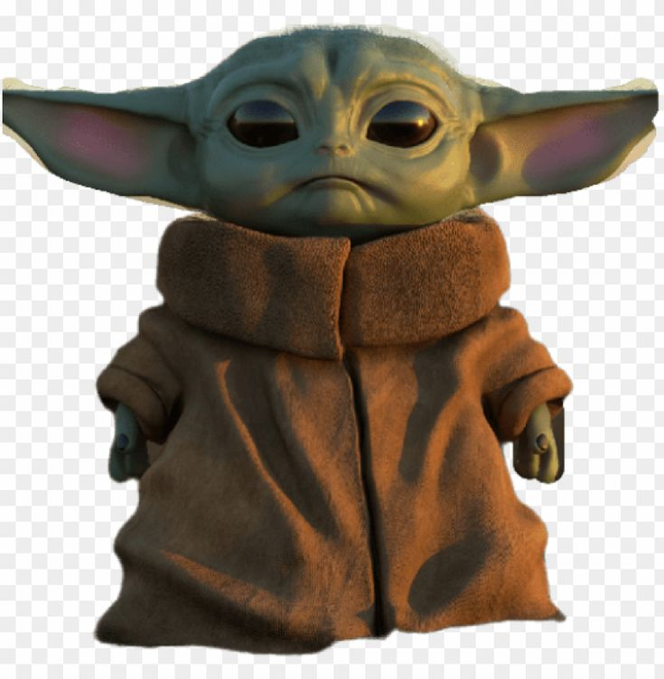

Star Wars (Guerra nas Estrelas) é uma franquia do tipo space opera estadunidense criada pelo cineasta George Lucas, que conta com uma série de nove filmes de fantasia científica e dois spin-offs. O primeiro filme foi lançado apenas com o título Star Wars, em 25 de maio de 1977, e tornou-se um fenômeno mundial inesperado de cultura popular, sendo responsável pelo início da "era dos blockbusters", que são superproduções cinematográficas que fazem sucesso nas bilheterias e viram franquias com brinquedos, jogos, livros, etc. Foi seguido por duas sequências, The Empire Strikes Back e Return of the Jedi, lançadas com intervalos de três anos, formando a trilogia original, que segue o trio icônico formado por Luke Skywalker, Han Solo e Princesa Leia, que luta pela Aliança Rebelde para derrubar o tirano Império Galáctico; paralelamente ocorre a jornada de Luke para se tornar um cavaleiro Jedi e a luta contra Darth Vader, um ex-Jedi que sucumbiu ao Lado Sombrio da Força e ao Imperador.
Os acontecimentos relatados em Star Wars ocorrem numa galáxia fictícia, sendo cada filme acompanhado por um pequeno texto de abertura com a intenção de contextualizar essa história no Universo Star Wars. É a única vez nos filmes que este Universo é analisado tendo o nosso como ponto de referência. O texto começa com a expressão: "Há muito tempo, numa galáxia muito muito distante...", numa clara alusão aos contos de fadas, "Era uma vez...". Estão bem presentes quatro pontos ao fim da frase, desde 1977 quando do primeiro filme, e este "erro" foi voluntariamente repetido para todos os outros filmes. Muitas das suas personagens são humanas, interagindo com várias criaturas fantásticas de muitos sistemas planetários alternados. Utiliza vários elementos sobrenaturais como magia, cavaleiros, e princesas, procurando reinterpretar arquétipos clássicos dos contos de fada e outros elementos mitológicos. Apesar dos filmes decorrerem no período cronológico de duas gerações, o Universo Expandido decorre num período de milhares de anos (mais de 25.140 anos), desde acontecimentos anteriores aos relatados nos jogos Star Wars: Knights of the Old Republic ("KotOR") (2003) ou KotOR II - The Sith Lords aos decorridos na banda desenhada (História em Quadrinhos) Legacy of the Force ou Star Wars: Legacy. A publicação de "Nova Ordem Jedi" contribuiu para o aumento do Universo, seguindo-se a publicação de bandas desenhadas, livros e jogos que ampliaram o Universo Star Wars futuro e passado, levando a criação de várias eras com períodos cronológicos bem definidos.
Inicialmente, George Lucas escreveu um roteiro de 6 horas de filme, já prevendo a resposta do estúdio propos mesmo assim. Recebendo um "não" como resposta decidiu dividir o filme em 6 episódios, porém resolveu gravar apenas os 3 últimos pois os julgava mais interessantes e reconhecia neles aspectos que cativaria o público. Acertou! Mas no fim dos anos 90 os fãs ganham um presente, a notícia de que os 3 primeiros episódios seriam gravados. A Fox, por desacreditar num filme que falava sobre o espaço, que na época era loucura, permitiu que George Lucas tivesse todos os direitos do filme, o que garantiu a George Lucas dinheiro suficiente para montar suas próprias empresas cinematográficas. Dentre elas a ILM, empresa que revolucionou a industria cinematográfica com efeitos especiais de altíssima qualidade, desenvolvendo tecnologia própria.
A saga Star Wars faz uso de arquétipos, comuns tanto em ficção científica quanto em mitologia antiga, assim como da musica romântica presente nesses gêneros. Em 2005, a Revista Forbes estimou o rendimento total gerado pela franquia Star Wars (durante o percurso de seus 28 anos de história) em aproximadamente vinte bilhões de dólares, facilmente fazendo-a uma das franquias baseadas em filmes de maior sucesso de todos os tempos.